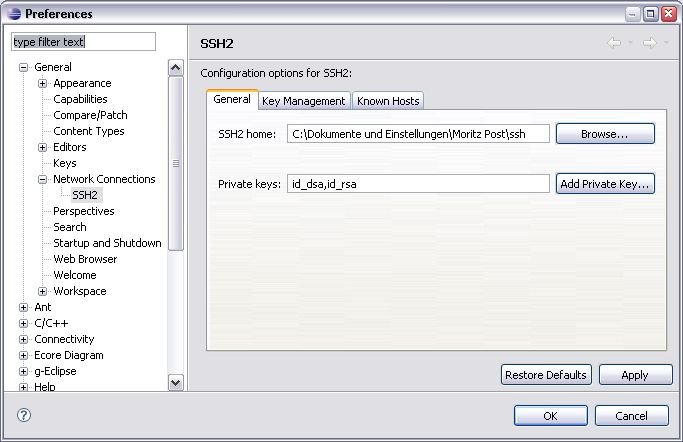

After we have created an AWS Virtual Organization we can now use these facilities to interact with the Amazon Elastic Compute Cloud (EC2).
The main entry point to working with the EC2 Service is the Grid Project found in the "Grid Project" view. The Grid Project displays all the physically existing folders on the local computer as well as a virtual view of the information provided by the underlying Virtual Organization.
When working with the EC2 service it is desirable to be informed
about the available Amazon Machine Images. To display a list of AMIs,
which can be started, we select Services -> Images in our
AWS VO. Via this tree branch we can choose to display a list of all
available Amazon machine images, a list of images which we are given
explicit access to (eg. another user has given us access to his image)
or a list of image we have created.
To launch any of the AMIs in the provided lists, right-click on the AMI and select "Launch AMI". This opens the launch dialog with the main tab active.
The AMI configuration is ready to be launched with its default configuration. Most likely you will want to customize several of the options presented in the Main tab. The following options can be set:
| AWS Access ID | The access id specifies the AWS account to launch the AMI with. |
| AMI ID | The ID of the AMI to launch. Is taken from the context of the selected AMI but can be any valid AMI ID. |
| Min | The minimum number of AMIs to launch. If EC2 can not provide the required number, the launch is cancelled. |
| Max | The maximum number of launched AMIs desired. |
| Key | The key specifies the login credentials on the launched instance. |
| Security Group | The security group allows or denies access to certain communication channels (e.g. ports). |
| Zone | The geographical zone where to place the EC2 instance. |
| Instance Type | The instance type denotes the hardware configuration of the instance to launch. |
Since some of these options are sensitive to the EC2 configuration associated with the AWS credentials, it is possible to fetch the possible values of the Key, Zone and Instance Type fields. Clicking on the "Populate from EC2" button in the lower right contacts the EC2 Service to obtain these values.
Also of particular interest is the "Parameter" tab. It allows to send instance specific details to the set of launched AMIs. The so called User Data can either be send via plain text or by providing a binary file. The binary file is not allowed to exceed a limit of 16KB.
The User Data can be retrieved from within a running instance via a HTTP call to an EC2 internal server. A common scenario is to use the user data to setup instance specific configuration details like starting services, modifying/providing configuration files etc. The interpretation of the provided User Data is up to the running instance and beyond the scope of the EC2 infrastructure.
For further information regarding the configuration process refer to: Using Parameterized Launches to Customize Your AMIs.
As with any other launch dialog, it is possible to save the settings by clicking "Apply" or to physically launch the entity by clicking the "Launch" button.
Once an instance is launched it is enlisted in the list of all
running instances belonging to the particular user. The list is found in
the AWS VO under the Computing branch. The list displays
the id of the running instance, the AMI id from which the instance
originated and its current status. The status can have one of the
following values:
| pending | The instance is booting up. |
| running | The instance is running and can be accessed |
| shutting-down | The instance is shutting down |
| terminated | The instance has been shut down and can not be accessed anymore |
The EC2 elements listed in the AWS VO are able provide some configuration details. To view these details, the "Properties" view is used. The following figure shows the "Properties" view displaying static metadata information for a launched EC2 instance. A similar layout exists for AMI properties, Security Groups, Keypairs, Elastic IPs etc.
Once an instance is launched g-Eclipse offers the possibility to
access this machine via a SSH shell. In order to use this connection
method, the security group used to launch the AMI has to open the port
22 (ssh default port). Because the ssh connection method uses the
eclipse connection infrastructure, the ssh private key has to be
inserted into the list of available keys. Therefore the preference page
General -> Network Connections -> SSH2 is used to insert
the private key which has been obtained when creating the key.

To connect to the running instance choose "Open SSH terminal..."
in the context menu of an instance. This opens the SSH login data
dialog, with the correct external DNS name inserted into the form. The
only thing to be provided is the login name which is "root".
There is no need for a password, since it is contained within the ssh
private key.
Clicking "Finish" opens the "Terminal" view and starts the login sequence.